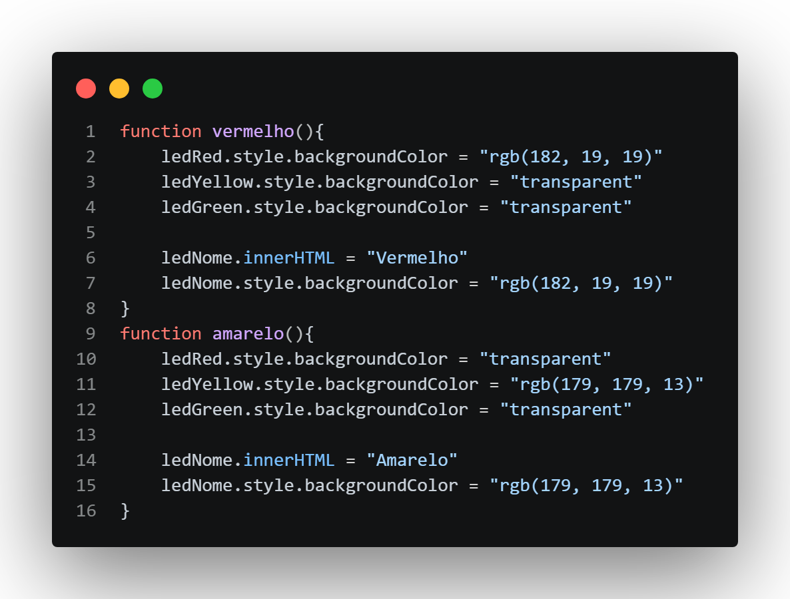
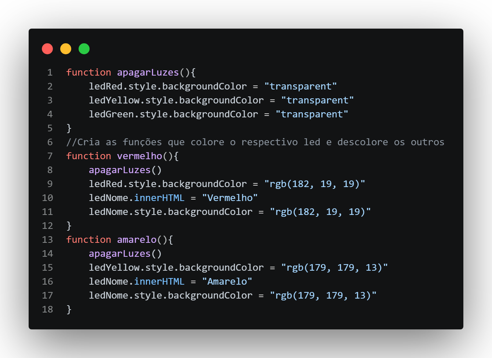
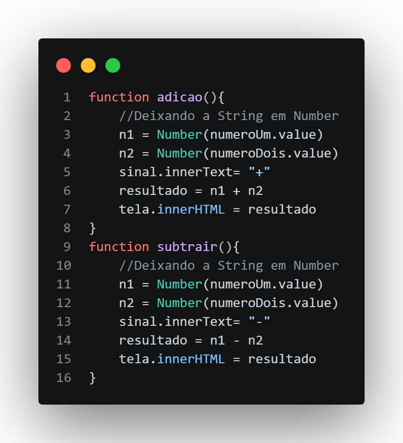
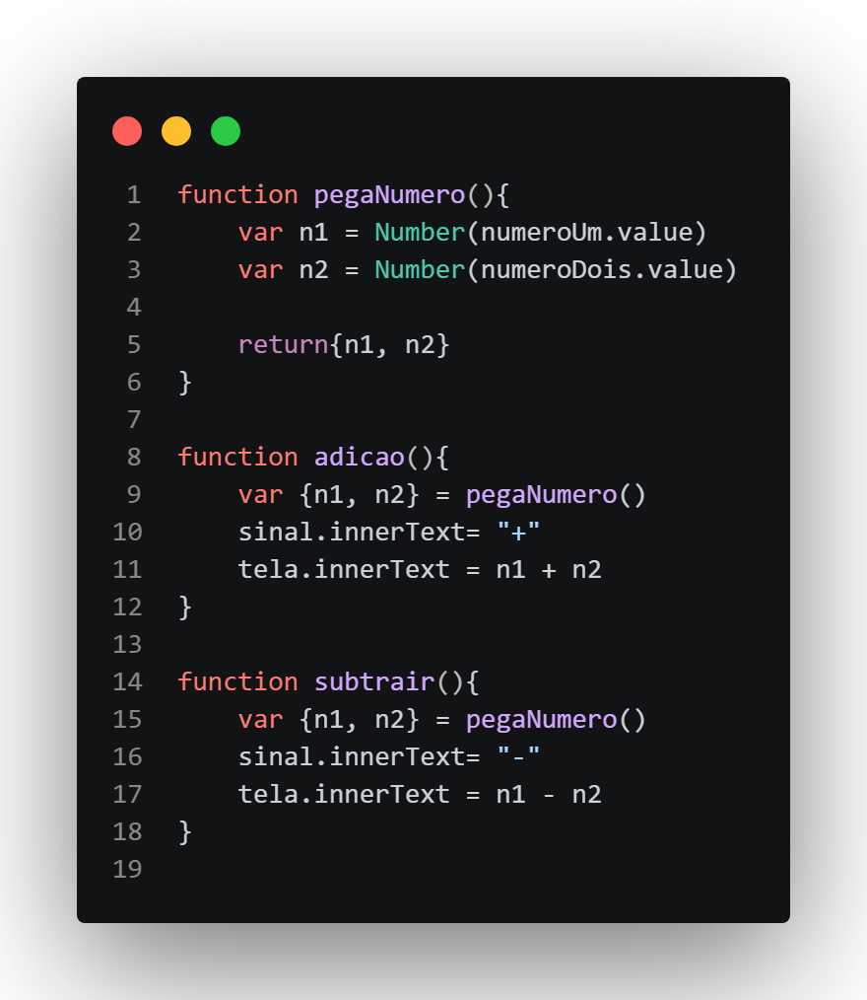

Crie três botões com 3 cores (Vermelho, Amarelo e Verde), e 3 Divs, como se fosse um semaforo, a ideia é que ao clicar no botão as cores do semaforo mudem
Cor do Led
Saudação
Faça uma pagina com campo de nome e o usuario ao colocar o nome, e clicar no botão, apareça "Olá nome!"
Digite seu Nome
Calculadora Completinha
Crie uma calculadora que possa receber dois numeros e possa multiplicar, somar, dividir e subtrair e se o usuario tentar dividir por zero deve aparecer "não é possivel dividir por zero"
Resultado
---
Correções Sugeridas pelo chatGPT
Exercicio 1 - semaforo
Esta foi o codigo utilizado para o Exercicio.

a ideia do codigo é que ao trocar a cor do semaforo as outras apagam, mas esse codigo tem um problema, ao trocar a cor a função sempre chama duas vezes o codigo que apaga a luz do semaforo, assim o codigo fica repetitivo e grande, mas esse problema pode ser facilmente corrigido se criar uma função que apaga as luzes e em cada função de troca de cor, chama essa função de apagar, observe o codigo a baixo:

Exercicio 3 - Calculadora
O problema desse exercicio foi praticamente igual ao ultimo, tivemos problema de diversas linhas que poderiam ser encurtadas, observe

Observe que o codigo "n1 = Number(numeroUm.value)" se repete em toda função, tanto para o n1 como o n2, mas podemos contornar essa situação, da msm forma que fizemos no exercicio 1, criando uma função para fazer esse trabalho, observe o codigo refeito:

agora criamos a função que transforma a string em Number e coleta os valores de n1 e n2, retornando o n1 e n2 prontos para uso; ai colocamos nas funções para buscar os parametros n1 e n2 na função criada e fazer a soma direto na incerção do resultado no texto